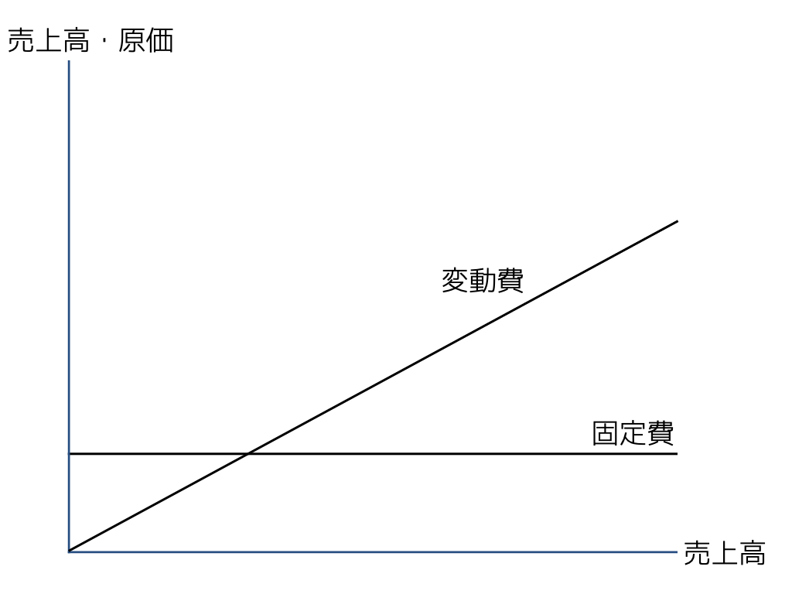
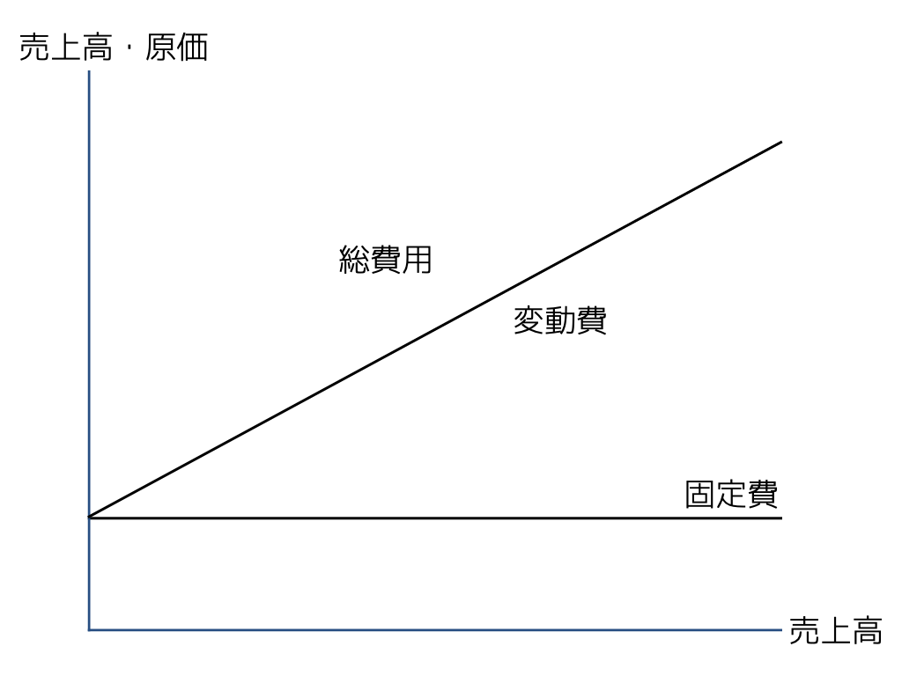
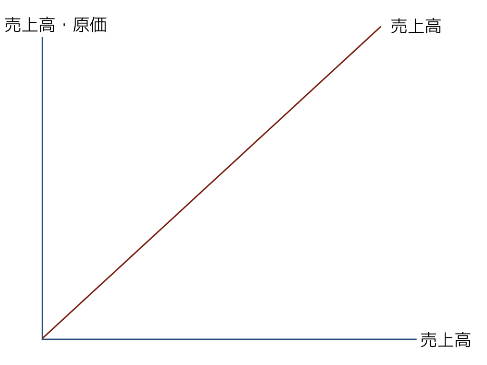
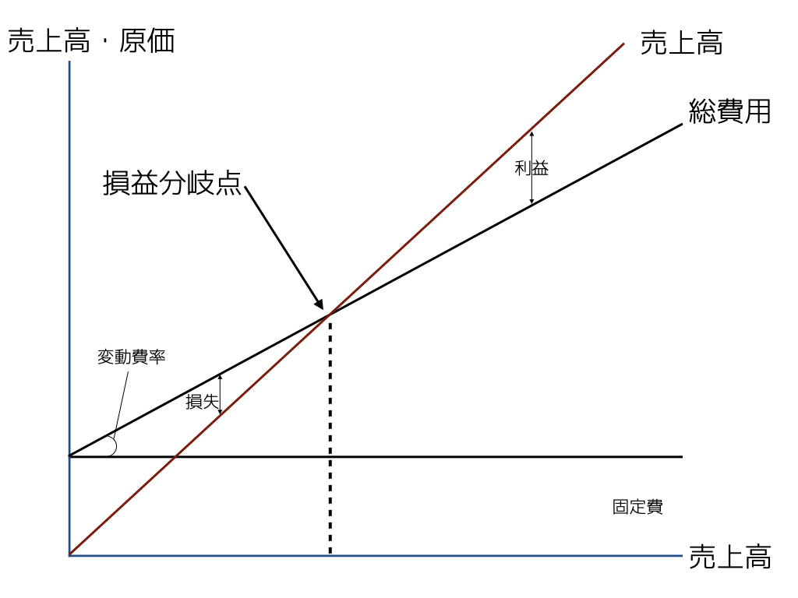

8 利益計画・予算管理
2023年度 管理会計
8.1 利益計画とは
企業における短期の総合計画
- 企業の全ての業務活動を網羅
- それらの活動を短期の目標（短期利益目標）の観点から総合調整した計画
- 予算編成方針を設定するために使われる
8.1.1 長期経営計画との関係
- 長期経営計画は，3年とか5年の総合計画
- これを1年単位の計画に落とし込む
8.1.2 予算との関係
- 予算は費目ごと（売上高予算，製造高予算，広告宣伝費予算，労務費予算…），部門ごと（事業部，課，係，個人），期間ごと（年，月，週…）の具体的な財務目標を定める
9 CVP関係の分析
- 企業にとって最も基本的な会計の関係
- 利益 = 収益 - 費用
- 利益計画を立てるための基本的な関係はCVP関係
原価計算上の原価は，一般に原価計算対象の生産のために犠牲にされた価値消費であるとされてきた。財務会計上の費用は収益との対応関係で把握される。キャッシュフロー会計では，貨幣の収入との関係で支出として捉えられる。 アメリカの原価計算では，原価と費用の区別はドイツの原価計算ほど厳密ではない。コストという時には，原価だけでなく費用をも包含することがあることに留意すべきである。
利益目標が立つとその達成のために必要な販売量・価格・セールズミックス等を検討しなければならない。
その際に使われるのがCVP (cost-volume-profit)分析。
9.1 損益分岐点（Breakeven point）
- 縦に金額（売上高や原価）・横に活動量（売上高や生産量）をとったグラフを使って利益の推移を図示する。
- 原価は固定費と変動費に分解する。
- 原価のうち，売上高に比例して大きくなるのは変動費部分，この売上高に対する変動費の金額（傾き）を変動費率という
横軸を売上高とすると…
売上高：\(Sales = Sales\)
原価：\(Cost=a + bSales\)
\(a\)は固定費，\(b\)は変動費率
なので，損益分岐点は売上高と原価が一致する，つまり\(Cost = Sales\)
\[ \begin{split} Sales &= a +bSales \\ Sales(1-b) &= a \\ Sales &= \frac{a}{1-b} \\ &= \frac{\text{固定費}}{1 -\text{変動費率}} \\ &=\frac{\text{固定費}}{1 - \frac{\text{変動費}}{\text{売上高}}} \\ & =\frac{\text{固定費}}{\text{限界利益率}} \end{split} \]




横軸を販売数量\(x\)，単価を\(p\)とすると…
売上高：\(Sales = px\)
原価：\(Cost=a + bx\)
\(a\)は固定費，\(b\)は変動費率
損益分岐点は売上高と原価が一致する，つまり\(Cost = Sales\)。その時の販売数量は
\[ \begin{split} Sales &= a +bx \\ px&= a +bx \\ (p-b)x &= a \\ x &= \frac{a}{p-b} \\ &= \frac{\text{固定費}}{\text{単価} -\text{変動費率}} \\ &=\frac{\text{固定費}}{\text{単価} - \frac{\text{変動費}}{\text{売上高}}} \end{split} \]
9.2 安全余裕率（Margin of safety）
現在の売上高が，損益分岐点と比べてどれぐらい差があるか。赤字にならないという意味でどれぐらい余裕があるか
\[ \frac{\text{現在の売上高}-\text{損益分岐点}}{\text{現在の売上高}} \]
10 セールズミックス
ここまでのCVP分析の話は，単一製品もしくは企業全体の平均の話をしていたと解釈できる。
しかし，多くの企業は複数の製品やサービスを販売していて，製品・サービスごとの収益性は異なる。企業が計画を立てる際にはこの複数製品・サービスの組み合わせ（セールズミックス）を考える必要がある。
10.0.1 例：靴メーカーC社
C社は小規模ながらヒール・スニーカー・ビジネスシューズを製造・販売している。基本的にはどの製品も作ったら売れる状況で，現在下記の通り製造・販売している。
固定費は共通なので，各靴の販売価格と変動費の差額である限界利益を求める。さらに，限界利益/販売価格で求められる限界利益率を求めると下記の通り。
各靴の販売量を考慮した会社全体の売上高と限界利益・限界利益率は以下の通り。
また，損益分岐点は
\[ \frac{\text{固定費}}{\text{限界利益率}}= \frac{$100,000}{0.61} \fallingdotseq $163,934 \]
もし，利益率の高いスニーカーに力を入れて（400→500）ビジネスシューズをその分減らしたら（300→200）
利益率は改善（61→63）し，損益分岐点が下がる。ただし，スニーカーの単価が低いので売上高や営業利益は全体として低下
\[ \frac{\text{固定費}}{\text{限界利益率}}= \frac{$100,000}{0.63} \fallingdotseq $158,730 \]
10.0.2 ボトルネックを考慮する
企業は好きな製品を好きなだけ作れるわけではない。生産や販売の能力（ヒト・モノ・カネなど）に制約があるのが普通で，その制約の中で最適なセールズミックスを考えなくてはいけない。
C社は顧客からの発注分として，3種類それぞれ200ずつの生産が必要である。また，販売会社が受け入れる最大量はそれぞれ600である。生産に関して，職人の最大可能操業時間（直接作業時間）は2,300時間である。この時，利益が最大となるセールズミックスは？
最低販売量を考慮に入れると \(2h \times 200 + 1.5h \times 200 + 2\times 200 = 1,100h\)。残りの1,200時間でどれを作れば良いか考える。限界利益を作業時間で割って時間あたりの限界利益を求めると，生産上のボトルネックを最も効率的に使う製品がどれかわかる。
ここでは，ハイヒールが一番効率が良い。そこで，ハイヒールを最大販売量まで作る。そうすると残り1200時間から800時間が使われる。次に効率的なのはスニーカーなので，400/1.5=266足作れる。ただし，時間が中途半端に余るので，264足とすると396時間使う。残り2時間で，ビジネスシューズを2足作る。